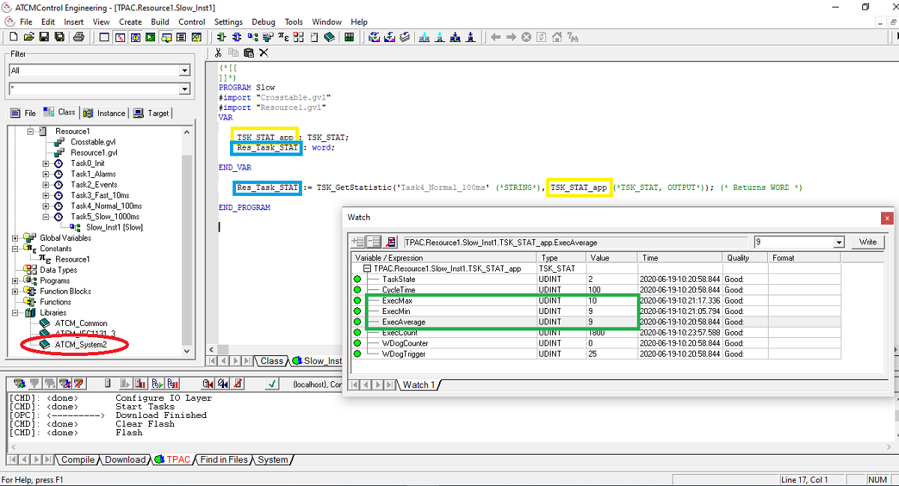

Il est possible de connaître le temps d'exécution d'un programme au sein d'une tâche. Pour ce faire, il est nécessaire:
Importer la librerie ATCM_System2, voir le chapitre “Ajouter des librairies au projet”.
Utilisez la function TSK_GetStatistic comme indiqué dans la figure suivante (voir “ATCMControl Engineering Help” pour plus de détails sur la fonction).
